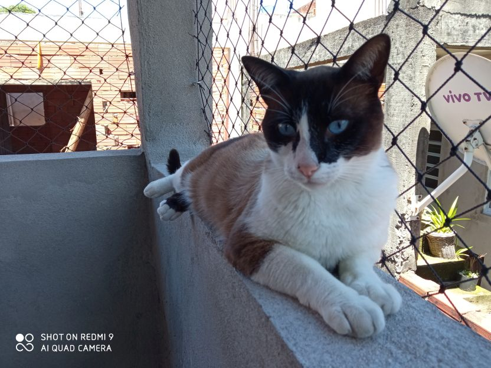
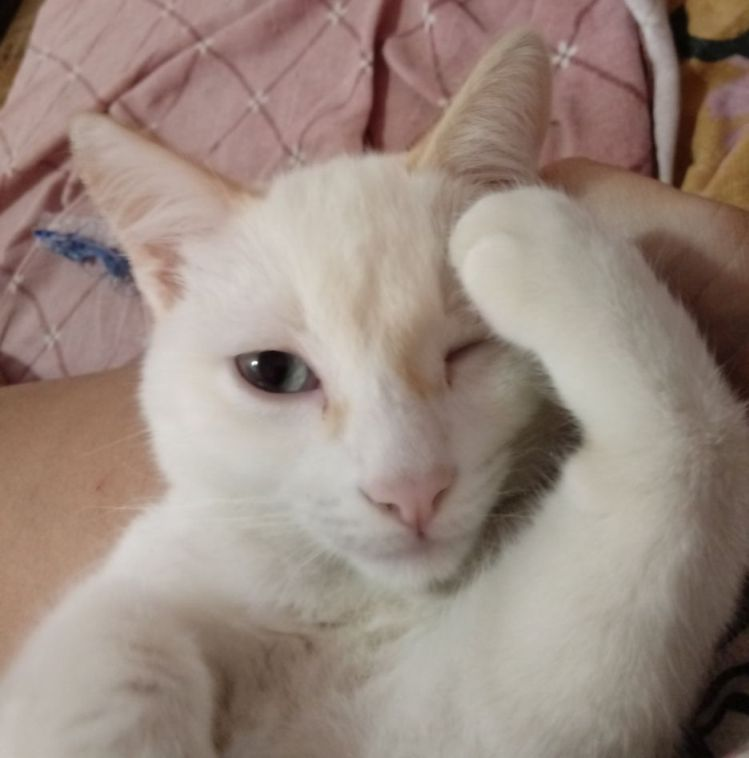

A Nina foi encaminhada a um veterinário para saber se estava tudo bem com ela, se ela era castrada... Quando ouvi o ultrassom tinha 4 pequenos corações que amei na hora. Oh,no,no... E no dia 13 de dezembro de 2017 a Nina me deu de presente....
Nino
O Nino foi o maior gato da ninhada, seu nome foi primeiramente foi Mingau, mas quando meu sogro adotou ele, o rebatizou de Nino, quando meu sogro faleceu o Nino passou um tempo com a avó do meu esposo e em 29/11/20 ele voltou para nós.
Nino brincando com a cordinha
Pipoca
Meu grudinho, se chama Pipoca porque ele nasceu muito muidinho e não dava pra ver o sexo, então coloquei um nome unisex,em 10 de agosto de 2018, descobrimos que ele tem algumas más formações em seu coraçãozinho, desde então fazemos tratamento para que sua preciosa vida seja a melhor o possível...
Pipoca se escondendo em uma sacola